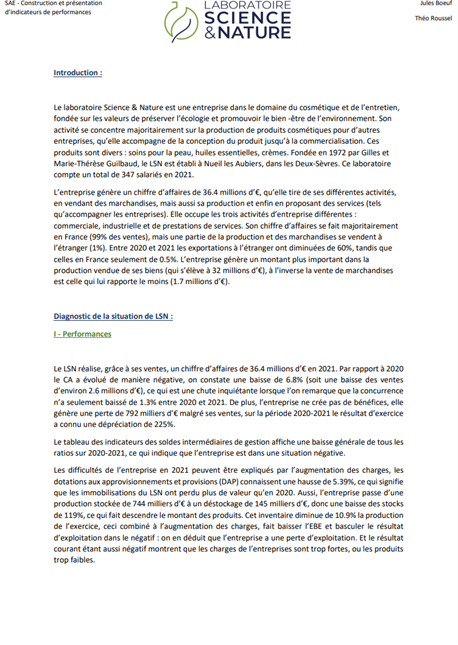
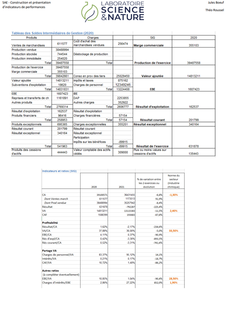
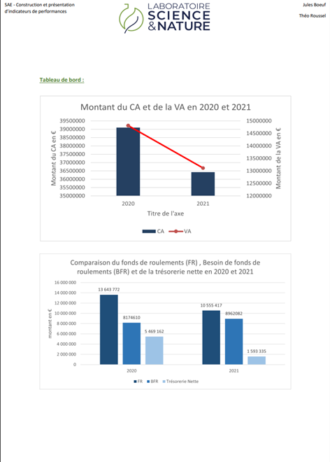

Building and presenting performance indicators
The goal of this project was to study how a company finances itself and how its performance changes over time, in order to summarize all this information in a study. The company studied for this project was Laboratoire Science et Nature, located in Nueil-les-Aubiers (Deux-Sèvres, FRANCE). We were given the intermediate management balance table and the functional balance sheet for 2020 and 2021, and we had to complete these two tables using the company's income statements. The intermediate management balances let us look at the company's performance, by studying how the costs, revenue, and value created changed, with other measures such as the company's revenue or its gross operating surplus. The functional balance sheet let us study how the company finances itself. Each table came with ratio calculations, which could be used to compare the performance of the company against its competitors.
The written study was done in Word, while the calculations were done in Excel.
Skills learned:
- Using Word and Excel
- Calculating and interpreting an intermediate management balance table and a functional balance sheet for a company
- Studying how a company operates, in terms of funding and performance
- Improving my writing skills
- Choosing charts to display data
Illustrations

Overview of the report

The intermediate management balance table and the functional balance sheet

Example of graphs for the analysis